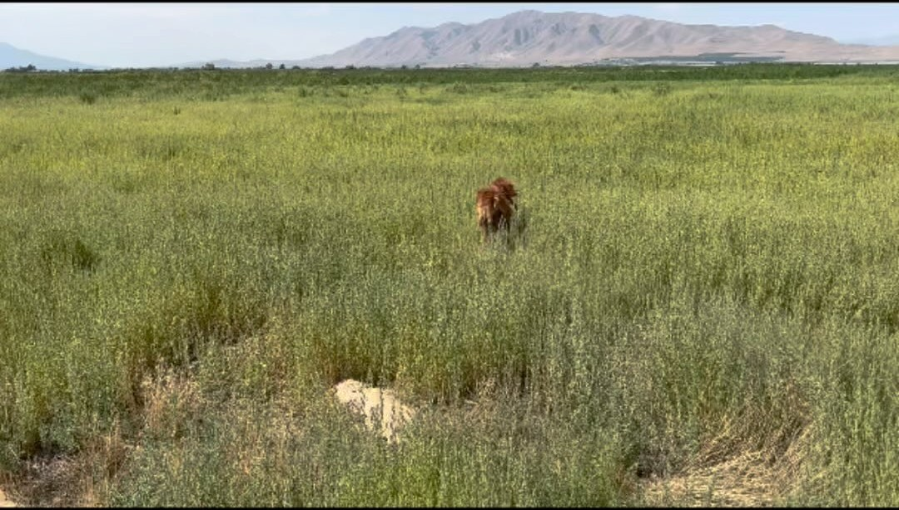

Episode 12 · August 16, 2023 · 1050
Episode 012 and Part 3 - "Sharpie" the red setter and current training update!

About This Episode
Hey everyone in this episode we talk about "Sharpie" the red setter and how his training has progressed. Find out some tips on training and see if this dog is coming together as planned? If you have questions, you can ask us at
Questions about the training topics in this episode? Tyce works with bird dog owners and hunters through Utah Bird Dog Training. Reach out to work with him directly.
Resources & Links
- Utah Bird Dog Training — Work directly with Tyce — professional bird dog training services in Utah.
Transcript
Full transcript for Episode 12: Episode 012 and Part 3 - "Sharpie" the red setter and current training update!.
Tyce
Hey everyone. Welcome to the Bird Dog Podcast. My name is Tys Erickson, and I'll be your host today. Hope everyone's having a great afternoon, and I'm excited to sit down here and talk with you guys about some dog.
Subjects.
I actually wanted to talk about this episode. We're gonna actually talk about part three of my little red setter that I picked up this last, kind of winter springtime. if you listen to part two and you've listened to part three, Listen to part one. You listen to part two. This is part three.
In Part one, I was on my way to choose this personal dog for myself. Again, a little red setter. And on part two I talked about my choice, what dog I ended up choosing. And now part three, we're gonna give you a current update on where the dog's at.
What we're doing with it today and, kind of bring it together. We don't wanna leave you hanging so, again, part one was really fun. I talked with the audience about this dog was about 10 months old at that point, nine, 10 months old. And I kind of just went through the process of.
Choosing a dog that a puppy or even a, a, a teenage dog that the, that these ones were, and kind of how I was gonna go about doing it, the procedures and the ways I was gonna evaluate the dog. And then in part two, that was after I'd met with the. The breeder of these dogs and, and, and, and I had a dog in my car with me and I talked about why I chose that dog. to, to get you updated, the dog is a little male. I named him Sharpie for sharp tail grouse. that was the name I decided.
I kind of struggled a little bit to choose a name to, to name this dog, but that's what we settled on with Sharpie. he's holding. Pretty true on everything that I evaluated on that makes me feel good, to know that this dog, that my evaluation was, was again holding true. to kind of update you where this dog's at, we have done proper burden gun introduction. The first thing we did was introduce 'em to birds and. Just get him as birdie as we can.
He started off a little slower. I think he was just a little reserved and he was going after the clip wing pigeons pretty good. I. And one day he was come by our chickens and he decided to chase a chicken that was out and I just let him go for it.
I wanted that prey drive up and building and I wanted to see if he would tackle that chicken. And sure enough he did. So that gave me a lot of hope. 'cause it was a bigger bird at that point, or kind of some of the pigeons. He was acting a little, a little funny about him, like he'd be interested in 'em.
And then it kind of almost seemed like he'd, he'd lose a little bit of. Interest in going after him. So I was kind of like, oh, okay. He's kind of, let's keep trying to build this. it seemed to keep building slowly, incrementally, like.
Most dogs do with training and we got 'em bird enough to the point where we, started off at a distance and we just slowly worked in. It was probably a week's period of time or so where we worked in maybe even a little longer, week and a half to where we could, throw that pigeon and shoot some shots over 'em. So with some of your pointy dogs, it can be a little trickier 'cause sometimes they're not as high of. High as, as high of retrieving dogs like, compared to a retriever.
And so I like the dog ideally like chasing the bird, grabbing it is, it's going on its way to get it, shoot the shot, grabs the bird, brings it into you, or retrieves it. Some dogs just don't have high retrieve drive when it comes to. pointers and pointing breeds. And so I kind of had to be a little more patient. It seemed like I get 2, 3, 4 retrieves out of him.
And then he was kind of a little bit done with the retrieving game, so I had to kind of take my time working on the gun. but his drive kept building, and he was getting better and better with the gun. So that was, that was nice to see. The next thing we worked on with him was the kennel command. We wanted to start getting a little bit of control on him, and so we taught him the kennel command, which is go into something.
Then we worked on the here command with him and the woe command, and then we overlaid those three commands with the eco, so we've done that to this point. He understands the eco well. He's, we've also incorporated the whistle, so he'll turn on a quartering whistle. He will also. come to me on a hear whistle and so we kind of have the basics of a gun dog.
Then we started running him on homing pigeons. I wanted to see if he would just kind of point on his own without, without the check cord in the beginning. So we just ran 'em, used some automatic releases. He was slowing up, showing some points, but.
We had a day or two, the releases were kind of being a little funky. We had to put a new hydraulic arm on one and he kind of got close to almost catching a bird, and that kind of gained some confidence in him. And so he was more just kind of slowing up, but then still going in, not really putting on the brake. So that wasn't gonna work.
And so we had to, we put him on the check cord, put a little resistance on him when we brought him down, went on those birds and we started getting those nice points out of him. Worked in on teaching, teaching him the game with the check cord. And putting 'em on lots of birds. And then from there we slowly let him drag the check court around and he was starting to point and hold points on his own and we could utilize the woe command to tell him to not move and to stand there.
And then, the last three training sessions, we've actually been starting to shoot birds over him. So he is off check cord. He is running just on the eco. He's pointing.
Every bird, he still sometimes wants to creep in a little bit. So we're still kind of tightening up using the birds to teach him, plus using the eco to do that. And he's coming around. We've again shot some pheasants over him.
I think I've shot four or five pheasants over him. no gun issues. His retrieving is actually looking. Better. So he pretty much, every time we'll go and retrieve it.
Now it's summertime, so he is running around. He's kind of warm, so they're trying to cool themselves through their mouth, but he'll run, he'll grab that bird and he will bring it kind of towards us. But then he wants to keep it. For himself.
So he has a little independence. He wants to grab that bird, keep it for himself, not just like, Hey boss, I'm gonna bring it in for you. Put it in your hand. And so I've, if I am more firm with him on the, on bringing the bird in.
Then he tends to, if I tell him here firmly, he drops the bird, he thinks he's in trouble and he doesn't grip onto it and hold it all the way in. So I've been trying to use kind of a, some good coaxing, some po more of positive voice, Hey buddy, come on. Bring it and then also when he doesn't have him, the bird in his mouth reinforcing the HEAR command if a dog has good obedience and you tell the dog here they know bird or not bird, they're gonna bring it in. But some dogs, they're smart and they know they got a bird in their mouth.
You might not reinforce the collar as much. And then if they're not force fetched and you try to reinforce the hear command with the eco, lots of times they will drop the bird. You gotta be careful using a eco when a dog is not force fetched. Some dogs can just use low pressure and they're gonna clinch onto that bird and you can reinforce the obedience and bring it in.
Most of the time, dogs are gonna want to drop that bird. If you have that pressure on a little too high, they're be like, whoa. And then they just kind of drop it and you don't want to create a, any negativity towards the bird, but. If the dog, if you tell the dog here, you give 'em a little bit of pressure and they do drop the bird, then follow through, reinforce the hear command maybe release the dog, call the dog back into you with the hear command a coup a handful of times, reinforce it without the bird in its mouth.
And, and then hopefully when that dog gets that bird back in its mouth, you tell it here, it just comes, comes into you naturally. I'm not worried about the retrieve, that's, that's gonna come. What I do like about this dog so far is he does have a retrieve. So he does like to get the bird, he does like to carry it.
Usually he'll carry it through about three quarters of the way back, and then he'll usually drop it out of his mouth. So when I go to force fetch a dog, it makes my job a lot easier if the dog likes to have. Birds in his mouth already. Now, if that dog has zero retrieve drive, which some do you, they run out to the bird, bird's dead.
They're like, okay. They kind of survey the situation. Bird's dead. Let's go get another one and they'll leave that bird to go retrieve to go find another bird.
So when you have to teach a dog to retrieve and then build the fun into it, that takes more time, that takes more effort. So again, when I was talking about part one, I was looking for a dog that would retrieve again, 'cause I'm a, I'm a hunter, so I like my dogs to find game point, game and retrieve game after I've shot it. So that being said, I, that was an important aspect to me. And so that dog Sharpie, he retrieved the best out of all three of those dogs, and so I kind of gave myself that upper hand because I chose a dog with good retrieve desire.
Now, Side note, you can have dogs occasionally, I would say most of the time they don't fall to suit on this, but you can have dogs that love to retrieve but have low prey drive. So they're like, I like to go chase the ball. I like to go get that. Then you put a bird out there in the field, then they're like, they're not gritty on it.
They're just not, don't have super high prey drive. And so that can affect, their desire, their desire to go get the game. My wife walked into my recording room and distracted me. I couldn't keep my, thought process going there, so sorry if the delay there for a second.
But we're back on track. So we were talking about pray, drive, and retrieve drive. So if you have a dog with high. Retrieve desire, generally that transfers over to Prey Drive because they want to get something, they want to go after something, and then you put a live bird out there and it just, it just amplifies that.
And so with this dog, it's been really fun to, see his. Prey drive, develop. He has good prey drive again, he's, he had no issue with the guns. And then the next step we're going to work on is I'm probably gonna go ahead and force fetch this dog.
I could go a very, a, you couldn't, if this was your dog, you could go a, a bunch of different ways. But what I usually like to shoot is not a ton of birds at this point. If I'm gonna force fetch the dog because I want to reinforce good habits. And now if this dog, if I shoot 20 or 30 birds over the dog, the dog, every time I'm kind of fighting it on the retrieve, it's just kind of solidifying those habits.
And I don't want that. I want this dog to retrieve that bird to hand. So I want make sure the dog is playing the game. So I'm gonna go ahead and shoot six to eight birds over the dog.
Maybe if you want to, you could go up to a dozen. Okay. We have a hunting dog. Now let's go ahead and fix some things.
And so now when I go ahead and force fetch this dog, I'm gonna clean up that retrieve and fix that in the beginning. And then when I go back to shoot birds, I. Later. The dog gray hunts, the dog gray points.
It's already good with guns. It knows those things. Now I'm just gonna clean up the retrieve, shoot more birds over the dog and reinforce the retrieve and create the correct habits that I want. another thing I, I may do, in this step, and we will kind of, we'll keep you along, maybe, we'll, we'll do a part four, but. I couldn't, I can go and I can finish the obedience.
So I can do, like, if I want to teach this dog to sit, I can, I can teach this dog to, lay down. I can teach this dog front to side hill, walking hill, place command. Just finish out the rest of the obedience. but anyhow, so that would be kind of the steps you can go and that's the fun thing about dog training. There are certain steps you want to take, but there are different.
You can, like, I can go, I could force fetch the dog and then I could go back and finish the obedience. Or now at this point I can finish the obedience and then force fetch the dog. And so there's more than one way to skin the cat. Right.
So you don't have to Exactly. You have to teach the dog walking heel at this point, or you have to teach the dog whatever command. Now there's programs that we've developed with our clients for. D training dogs for over 16 years now that like this is the step, this is how we do it, but.
When it's a personal dog. You get to, you get to have more leeway and, and kind of go a different route. So I might be cheating a little bit. Like, Hey, I wanna force us this dog early on quicker, because usually with our clients' dogs go ahead and finish the obedience.
But I want to clean up that retrieve, I want to hunt this dog 'cause we're knocking on mid-August here and the chucker hunts and, and our bird hunts. Our grass hunt's gonna start September 1st. And so I want to get this dog. Developing a nice retrieve.
And so this fall I can hunt it and have a nice retrieve or hunt it here soon. And then I can work on the obedience on my own time. Because right now I have enough in this dog. I can take it hunting and control it with just those three commands.
Kennel command here, command woke command, and the whistle commands and it's all overlaid the eco. So I can have this dog obviously off a long lead and out there hunting around. that's kind of the latest on Sharpie. oh, a couple things. I did evaluate. I was, I was evaluating for in.
Part, one, as I said, I don't like barking dogs. And so we put each of those dogs in a crate by themselves, kind of with me and the owner out in the front so he could see us. And then we stepped out of sight and he did not make any noise. And that has stayed true.
So that's been lovely in his dog run he's barked a little bit here and there, but he's very quiet, which I love. Another thing I'm really loving about this dog, just his demeanor. And that's one of the reasons I chose a setter. They can be a little more.
Finicky when it comes to training. Gotta be a little more patient, cheerlead him. That can be a little softer, but he's really opening up in the field like a setter should. And then at in the home, he has that, he has a good off switch.
He's not just charged up all the time. This is a dog that could hang out in the house, be calm, be comfortable with the family, but then he is gonna turn on and go out in the field. So I really like that so far. So I'm happy about him.
He has a good personality, good temperament. We're gonna clean up the retrieve, finish the rest of the obedience, and then we're gonna be hammering birds over him this fall. So I'm really excited about that. And part four, maybe I'll talk about his first hunt or hunts and I'll let you guys kind of know how that goes if you're interested in following along and kind of seeing.
How this dog develops and, hopefully we will get him maybe to some neighboring states or in the Midwest and go hunt some pheasants or. I plan to hunt chucker grouse, pheasants, whatever I can with him. I'm excited for this season. I'm seeing some clutches of pheasants around.
So I think this year is gonna be a better year than it has in the past. Last year I felt in Utah here was a little better. I think this year we've had a good hatch. There's tons of grasshoppers.
Our grass is tall. I think we're gonna have some, good bird counts. And, it's, it's gonna be good stuff. So.
Thanks for taking the time to listen today. If you guys have any, questions or comments or, and are, have any topics like, Hey, could you address these or talk about these, feel free to hit me up at the Bird Dog podcast@gmail.com or you can, direct message us on Instagram at the BirdDog Podcast. And, again, thanks for hanging out with us. I know we're just kind of the beginning stages of rolling this podcast.
Out. I'm getting more comfortable talking. I'm gonna try to get more and more good people on here to discuss awesome topics and make things exciting. So appreciate your guys' time.
Hope your dogs are all doing well, and hope you have a wonderful day. And again, thanks for listening to the Bird Dog Podcast.
About the Host
Tyce Erickson
Tyce Erickson is a professional bird dog trainer and the owner of Utah Bird Dog Training in Utah. For nearly two decades he has worked with pointing dogs, retrievers, and family hunting dogs — helping owners build dogs that are capable and enjoyable in the field. The Bird Dog Podcast is an extension of that work: honest conversations on training, hunting, breeding, and everything that goes into a life spent working dogs.
More About Tyce